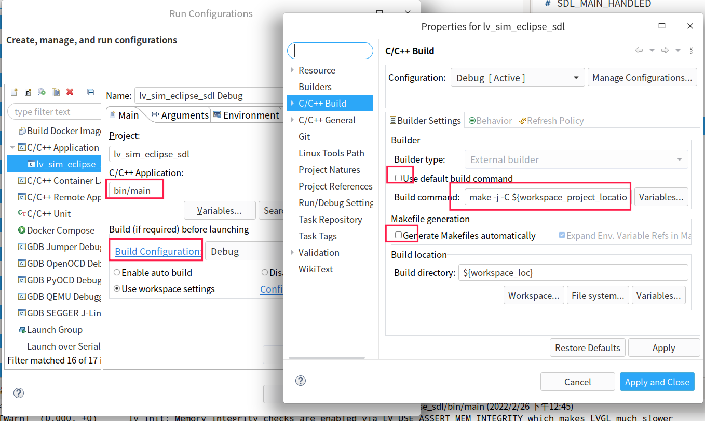

学而时习之
学习计划
- 学习 egui 源码
- async wake unpin 分析: https://github.com/zesterer/pollster
- 学习 wgpu
- 解读 rustdesk 源码
常读书, 读好书

本笔记由 mdbook 构建
二极管
N型半导体 和 P型半导体
在N型半导体中掺入五价元素, 在与周围的硅原子形成共价键后, 还多出一个电子, 多出的电子不受共价键的约束, 只需很少的能量就成为自由电子. N型半导体中, 自由电子是多子, 空穴是少子
在P型半导体中掺入三价元素, 在与周围的硅原子形成共价键后, 会就产生了一个空位, 当硅原子的外层电子填补空位时, 硅原子的共价键中便产生一个空穴. P型半导体中, 空穴是多子, 自由电子是少子
PN结
二极管 工作原理 How does a Diode work
P型半导体和N型半导体构成PN结后, N区的电子(多子)会扩散到P区, 和P区的空穴结合, 于是N区产生了正离子, P区产生了负离子, 正离子和负离子之间形成了内电场, 内电场会阻碍扩散运动, 内电场也会让P区的电子(少子)向N区漂移
慢慢地, 当N区的电子浓度降低, 扩散运动减弱, 但是由于内电场是在不断增强, 所以漂移运动在不断增强, 直到扩散运动和漂移运动达到平衡
在无外电场和外部激发下, 参与扩散的多子与参与漂移的少子 数目相同, 从而达到动态平衡, 形成的这个内电场区域称之为PN结, 或: 阻挡层、耗尽层、空间电荷区.


PN结 的 正向电压


PN结 的 反向电压


在低掺杂的情况下, 耗尽层较宽, 当加很小的反向电压, 相当于是增强了内电场, 于是就加剧了少子的漂移运动, 同时多子的扩散作用也会加剧, 所以耗尽层会变窄, 并达到新的平衡.
在高掺杂的情况下, 耗尽层很窄, 当加很小的反向电压, 就会加剧少子的漂移运动, 在耗尽层形成很强的电场, 而直接破坏共价键, 使价电子脱离共价键的束缚, 产生电子-空穴对, 使电流急剧增大.
在很低的反向电压时, 就引起电流急剧增大, 这被称为齐纳击穿, 如果反向电压继续增大, 新产生的电子-空穴对被电场加速后又撞出其它的价电子, 载流子雪崩式倍增, 就产生了雪崩击穿.
为什么在掺杂浓度高的区域 空间电荷区更窄
结合的 N型半导体 和 P型半导体, 原子的密度应该是一样的, 只是掺杂的元素浓度不同.
因为N区电子与P区空穴结合才形成了N区正离子和P区的负离子, 这些正负离子是成对出现的, 如果掺杂浓度不同, 那么产生相同数量的正负离子数量所需的体积就不同. 掺杂浓度越高, 所需体积就越少, 所以 在掺杂浓度高的区域 空间电荷区更窄
稳压管工作原理
齐纳二极管又叫稳压二极管
稳压二极管的伏安特性, 如图.
正向偏置状态下, 稳压二极管表现为普通二极管的伏安特性, 即正向特性为指数曲线. 当反向电压增大到一定数值时则击穿, 击穿区的曲线很陡, 几乎平行于纵轴, 表现为很好的稳压特性

整流管工作原理
原理:
二极管整流利用了它具有单向导电性, 也就是电流只能从正极流向负极, 而不能从负极流向正极.
只有二极管两端加正向电压并且大于一定值时, 二极管才会导通, 导通后电阻很小, 相当于一根导线.
而在二极管两端加反向电压时, 二极管因为内部PN结的关系, 反向电流很小, 可以忽略不计, 可以看作是截止状态.
半波整流电路
参考: 二极管整流电路工作原理图解
半波整流电路:

半波整流电路波形:

220V/50Hz交流电经过变压器输出U2, U2也是正弦交流电压, 大小和方向不断变化.
当正半周流过二极管时, A点电位处于高电平, B点电位处于低电平, 二极管处于正向偏置, 此时二极管导通.
当负半周流向二极管时, A点电位低于B点电位, 二极管反偏, 处于截至状态, 没有电流流过.
产生的波形只在一个方向上变化, 称这种为脉动直流电
桥式整流电路
参考: 秒懂桥式整流工作原理(动画)
变压器u2正半周时电流通路:

变压器u2负半周时电流通路:

整个周期电流通路是这样的:

桥式整流电路输出波形与全波整流电路的一样, 也是全波波形, 所以整流后输出电压是整流前的0.9倍

总结:
- 画图时要注意4只整流二极管连接方法.
- 电源变压器次级线圈不需要抽头.
- 每一个半周交流输入电压期间, 有2只整流二极管同时串联导通, 另外2只整流二极管截止.
- 桥式整流电路输出波形是全波波形
三极管
箭头方向
箭头只能从P到N，所以根据箭头指向即可确定三极管是PNP型还是NPN型

基本电路
$\Delta u_{I}$ 表示输入信号, $\Delta u_{O}$ 表示输出信号
基极 发射极 输入信号 构成输入回路, 集电极,发射极输出信号构成输出回路.

三极管内部电流


NPN管特点: 1. 上层的发射极掺杂浓度很高, 2. 中间的基极很薄, 掺杂浓度很低, 3. 下层的集电极面积很大
三极管的输入输出特性

三极管输出特性


为什么小电流Ib能控制大电流Ic的大小, 以及放大电路的原理
参考: 张云 - 三极管的动画
这里的三极管是双极型晶体管, 模电的放大电路和数电的简单逻辑电路里面都会用到. 有集电极c、基极b、发射极e、以及两个PN结：集电结和发射结. 集电极面积比较大, 基极厚度薄而且载流子浓度比较低.
下图是个NPN型的三极管:

当发射结正偏时, 电荷分布会发生变化, 发射结宽度会变窄;相当于给电子打开了一扇e到b的大门
集电结反偏时, 电荷分布会也发生变化, 集电结宽度会变宽. 相当于打开了阻碍电子从c极跑出去的大门, 如下方动画所示:

b极会接一个大电阻RB限制电流Ib的大小, 跑到b极的那些多余的电子就只好穿越集电结, 形成电流Ic, 如下方动画所示：

如果基极电压翻倍, 电荷分布会继续发生变化, 发射结宽度会变得更窄, 这扇大门变得更宽了, 将会有更多的电子跑到b极. 如下方动画所示:

由于RB是大电阻, Ib就算翻倍了也还是很小, 所以更多的电子会穿越集电结, 让Ic也翻倍. 如下方动画所示:

两个直流电源是可以合并到一起的, 再加上小信号ui和两个电容, 就得到了放大电路, 如下图所示:

如果电阻大小合适, 这个放大电路能够将小信号$u_i$放大成相位相反的大信号$u_{CE}$, 如下方动画所示:

红色为输入端, $u_i$的变化会影响$U_{BE}$, 把发射结看成一个小电阻, 红色的Q点就会沿黑线运动, 然后画出$i_B$的图像; 根据$i_C$=$\Beta i_B$,画出$i_C$的图像, 纵坐标从$\mu A$变成了$mA$; 而输出端有$U_{CE}=U_{CC}-I_CR_C$, 当$U_{CC}$、$R_C$不变时, $U_{CE}$与$I_C$反相
MOS管
参考: MOS管原理,非常详细
参考: 超低内阻mos管-MOS总结
三个极怎么判定

是N沟道还是P沟道


寄生二极管的方向如何判定


MOS管用作开关时在电路中的连接方法


应用


使用场景
一般主板上使用最多的是增强型MOS管
NMOS最多, 一般多用在信号控制上
其次是PMOS, 多用在电源开关等方面
耗尽型几乎不用
与三极管的区别
三极管是电流控制, MOS管是电压控制, 主要有如下的区别:
-
只容许从信号源取少量电流的情况下, 选用MOS管；在信号电压较低, 有容许从信号源取较多电流的条件下, 选用三极管.
-
MOS管是单极性器件(靠一种多数载流子导电), 三极管是双极性器件(既有多数载流子, 也要少数载流子导电).
-
有些MOS管的源极和漏极可以互换运用, 栅极也可正可负, 灵活性比三极管好.
-
MOS管应用普遍, 可以在很小电流和很低电压下工作.
-
MOS管输入阻抗大, 低噪声, MOS管较贵, 三极管的损耗大.
-
MOS管常用来作为电源开关, 以及大电流开关电路、高频高速电路中, 三极管常用来数字电路开关控制.
基本的门电路
触发器/RS触发器/D触发器/边沿性D触发器 工作原理 锁存器 工作原理
TTL触发器
参考自: 数字电子技术基础 - 3.5.2 TTL反相器的电路结构和工作原理

分析

设 $V_{CC}$ 为5v, 输入信号: $V_{IH} = 3.4V$, $V_{IL} = 0.2V$. 开启电压: $V_{ON}=0.7V$.
$v_I=V_{IL}=0.2V$
$T_1$ 的发射结必然导通. 导通后 $T_1$ 的基极电位被钳在 $v_{B1} = V_{IL} + V_{ON} = 0.9V$, $i_B = (V_{CC} - v_B) / R_1 = 1.025mA$. 根据 $T_1$ 的集电极回路, 可以计算 $T_1$ 的最大饱和电流为: $5v / 1.6k\Omega = 3.125mA$, 由于$\beta$一般在几十到几百, $3.125 / 1.025 \approx 3$远小于正常值, 因此 $T_1$ 工作在饱和状态, 所以 $v_{b2}$ 小于 $v_{b1}$, 所以 $T_2$ 截至, $v_{b5} = 0$, $T_5$ 截至. $T_2$ 截至, $r_{ce2}$ 很大, 所以 $v_{c2} \approx 5V$, $v_{b4} \approx 5V$, $T_4$ 导通, $v_e4 \approx 4.3V$, 经过D2后, $v_o \approx 4.3V - 0.7V = 3.6V$
$v_I=V_{IH}=3.4V$
nanoESP32-C3 开发板
使用 openocd 调试 esp32c3
编译 hidapi
编译 openocd-esp32 失败:
configure: error: hidapi is required for the CMSIS-DAP Compliant Debugger
编译 hidapi:
git clone https://github.com/Dashlane/hidapi.git
cd hidapi
./bootstrap
./configure --enable-static --disable-shared
make clean
make
sudo make install
编译 openocd-esp32
git clone https://github.com/espressif/openocd-esp32.git
cd openocd-esp32
./bootstrap
./configure --enable-cmsis-dap
make -j
sudo make install
sudo systemctl restart udev
Burn the efuse
the efuse JTAG_SEL_ENABLE should be burned to enable the jtag function.
espefuse.py -p /dev/ttyACM0 burn_efuse JTAG_SEL_ENABLE
启动 openocd
设置 GPIO10 到 GND 用于选择 GPIO function 到 JTAG, 重新给开发板上电
openocd -f interface/cmsis-dap.cfg -f target/esp32c3.cfg -c "adapter_khz 10000"
能调试, 但有两个大问题: 1.速度特别慢,esp的日志输出需要12s，LED电平翻转需要3s 2.openocd启动后,gdb可能有5次只能成功连上1到2次 体验极差,还是打Log最方便了...
STM32笔记
时钟选择
查询 STM32F1/F7中文参考手册, "2.2 存储器组织结构", 查看使用的外设挂载在哪个总线上, 总线的速度可以通过 STM32CUBEMX 软件中查看到


windows 开发环境搭建
安装软件包管理工具choco
administrator权限打开powershell, 执行:
Set-ExecutionPolicy Bypass -Scope Process -Force; iex ((New-Object System.Net.WebClient).DownloadString('https://chocolatey.org/install.ps1'))
使用choco安装(admin权限):
make - 构建工具
openocd - debug server
gcc-arm-embedded - 编译工具链
choco install make openocd gcc-arm-embedded
安装非choco管理的软件
这下面的在choco中没有找到, 需要手动安装:
stm32cubemx:
https://www.st.com/zh/development-tools/stm32cubemx.html
stlink 驱动, 调试使用
https://my.st.com/content/my_st_com/zh/products/development-tools/software-development-tools/stm32-software-development-tools/stm32-utilities/stsw-link009.html
使用 cmsisdap 调试 stm32
创建文件 dap-stm32.cfg, 添加以下内容:
interface cmsis-dap
transport select swd
source [find target/stm32f1x.cfg]
烧写程序:
openocd -f dap-stm32.cfg -c "program build/stm32f103rct6.bin 0x8000000 reset exit"
用vscode调试, 安装插件: 1.c/c++ 2.cortex-debug
打开 launch.json, 新添加一项调试配置:
{
"name": "Cortex Debug",
"cwd": "${workspaceRoot}",
"executable": "build/stm32f103rct6.elf",
"request": "launch",
"type": "cortex-debug",
"servertype": "openocd",
"configFiles": [
"dap-stm32.cfg"
]
}
文档
https://www.rt-thread.org/document/site/#/rt-thread-version/rt-thread-standard/README
开发环境:
硬件: Art-pi stm32h750
开发环境: Deepin OS
入门
环境：
sudo apt-get install libncurses5-dev
pip3 install --user scons 或 sudo apt-get install scons
可选： sudo apt-get install qemu
代码：
git clone https://github.com/RT-Thread/rt-thread.git
cd rt-thread/bsp/stm32/stm32h750-artpi-h750
编译
scons
烧写：
openocd -f board/stm32h750b-disco.cfg
arm-none-eabi-gdb -ex "target extended-remote :3333" ./rt-thread.elf
monitor halt
load
telnet 127.0.0.1 4444
load_image ./rt-thread.elf
reset run
更新 在线包
使用 "scons --menuconfig" 后 会默认安装及初始化Env环境, 并在home目录下生成".env"目录
执行 "source ~/.env/env.sh" 才可以使用 pkgs 命令
pkgs --update
配置 wifi tcp 通信
git clone https://github.com/RT-Thread-Studio/sdk-bsp-stm32h750-realthread-artpi.git
cd sdk-bsp-stm32h750-realthread-artpi/projects/art_pi_wifi
先创建链接：
ln -s ../../rt-thread rt-thread
ln -s ../../libraries libraries
就可以运行 GUI 了：
scons --menuconfig
生成 vscode 项目：
scons --target=vsc
编译：
scons -j 40
烧写：
st-flash write rtthread.bin 0x8000000
烧写后， 看串口终端有了 输出. 网络初始化后,
扫描 wifi:
wifi scan
加入热点：
wifi join HOT-NAME HOT-PASSWORD
flash
Flash 存储是按块组织的, 在使用时也倾向于按块访问才更加高效.
在写入数据时, 需要先将所写位置所属的块擦除, 不管你是不是只写一个字节. 所以如果要改写Flash中的数据, 总是先将数据所属的块缓存到内存中, 然后再在内存中改写好数据后又重新写回块, 这样就不会丢失数据, 但是开销很大.
在读数据时, 往往也是先定位块的位置, 然后在块中顺序读取, 在不同块中 间断读取数据时非常低效的.
但是: NOR Flash 读取数据时可以做到任意的寻址而不会有太大的花销, 它的读操作是接近于RAM的，而写操作依然延续了按块擦除然后再按块写的特点
正因为这些特性，Flash通常用于存储不需要频繁改动的掉电不能丢失的数据
Rust嵌入式开发环境
vscode 开发环境, 硬件: stm32f746g-disco
安装必要的工具:
cargo install cargo-generate
rustup target add thumbv7em-none-eabihf
rustup component add llvm-tools-preview
cargo install cargo-binutils
生成项目:
cargo generate --git https://github.com/rust-embedded/cortex-m-quickstart
cd <DIR>
重命名 .cargo/config 到 .cargo/config.toml (不改也可以, 都支持, 改了有高亮显示):
[build]
target = "thumbv7em-none-eabihf" # Cortex-M4F and Cortex-M7F (with FPU)
修改 memory.x 中的 FLASH 和 RAM 的源地址及大小:
FLASH : ORIGIN = 0x08000000, LENGTH = 1M
RAM : ORIGIN = 0x20000000, LENGTH = 256K
更新一下 Cargo.toml 中依赖的版本.
编译:
cargo build
查看大小
cargo size --bin app
cargo size --bin app -- -A
查看二进制信息:
cargo readobj --bin app -- -file-headers
反汇编二进制文件:
cargo objdump --bin app --release -- --disassemble --no-show-raw-insn --print-imm-hex
调试, 在launch文件中添加:
{
/* Configuration for the STM32F303 Discovery board */
"type": "cortex-debug",
"request": "launch",
"name": "Debug (OpenOCD)",
"servertype": "openocd",
"cwd": "${workspaceRoot}",
"preLaunchTask": "Cargo Build (debug)",
"runToMain": true,
"executable": "./target/thumbv7em-none-eabihf/debug/app",
"configFiles": ["interface/stlink.cfg", "board/stm32f746g-disco.cfg"],
}
优化
官方文档写的很清晰
The Embedded Rust Book - Optimizations: the speed size tradeoff
C语言
编译过程
预处理: 展开头文件及宏定义
gcc -E -I./inc test.c -o test.i
cpp test.c -I./inc -o test.i
编译: 将预处理的代码翻译成汇编代码
gcc -S -I./inc test.c -o test.s
汇编: 将汇编代码翻译成机器码, 这一步生成二进制格式的目标文件
as test.s -o test.o
链接: 将目标文件和库文件链接成最后的可执行程序
ld -o test.out test.o inc/mymath.o ...libraries...
内存布局
栈区
局部变量, 编译器在编译时已经确定了栈的大小
堆区
malloc分配的内存, 程序员自己控制 分配与释放
数据区
全局区(静态区)
如果已初始化, 放在DATA段
如果未初始化, 放在BSS段, 这里只保存必要的大小信息, 不占用可执行程序的大小, 加载程序时分配内存
常量区
常量字面量
代码区
函数定义
大小端 位域
大小端:
intel芯片用的是小端, 就是内存是递增的, 数据是按照字节存放的, 低位数据放在低地址上, 不符合人类的阅读顺序, 比如: 对int类型数据 它的数据是: b3 b2 b1 b0, 内存从低到高: b0 b1 b2 b3
结构体对齐
-
第一个成员的偏移量为0
-
其它成员的偏移量是其对齐数的整数倍
-
结构体的大小为最大对齐数的整数倍
例子： struct One { char a; double b; short c; int d; char e; }; 规则1： a的偏移量是0 规则2： 由于b的对齐数是8,所以1个字节补7个字节，b的偏移量为 0 + 1 + 7 = 8 由于c的对齐数是2,c前面的长度是 8 + 8 = 16, 是2的倍数， 所以c的偏移量是 16 由于d的对齐数是4,d前面的长度是 16 + 2 = 18, 不是4的倍数， 补2个字节， d的偏移量是 18 + 2 = 20 由于e的对齐数是1,e前面的长度是 20 + 4 = 24, 是1的倍数, d的偏移量就是 24 整体的大小为 24 + 1 = 25 规则3： 由于25不是最大对齐数的整数倍, 所以补7个字节, 为32
另外:
如果使用了 #pragma pack(4) 这个宏可以改变最大对齐数, 这意味着比如double的对齐数就是4. 也可以使用: __attribute__((__aligned__(4))) #pragma pack(4) struct One { char a; double b; short c; int d; char e; }; 规则1： a的偏移量是0 规则2： 由于b的对齐数是4,所以1个字节补3个字节，b的偏移量为 0 + 1 + 3 = 4 由于c的对齐数是2,c前面的长度是 4 + 8 = 12, 是2的倍数， 所以c的偏移量是 12 由于d的对齐数是4,d前面的长度是 12 + 2 = 14, 不是4的倍数， 补2个字节， d的偏移量是 14 + 2 = 16 由于e的对齐数是1,e前面的长度是 16 + 4 = 20, 是1的倍数, d的偏移量就是 20 整体的大小为 20 + 1 = 21 规则3： 由于21不是最大对齐数的整数倍, 所以补3个字节, 为24
gcc中常用属性
用于设置编译器的一些特殊行为
设置对齐字节数:
__attribute__((__aligned__(4)))
取消优化对齐, 按照实际字节数存储
__attribute__((packed))
将函数或数据放到特定的代码段:
__attribute__((section("section-name")))
阻止函数内联:
__attribute__((noinline))
让函数总是内联:
__attribute__((__always_inline__))
设置特定函数的优化级别， O0,O1,O2,O3:
__attribute__((optmize("Ox")))
gcc 优化
优化级别
O0,O1,O2,O3,Os
优化方法
通过给gcc参数:
gcc -O2 ...
通过代码:
给这行代码以下的代码设置优化级别:
#pragma GCC optimize ("O3")
给特定函数设置属性:
__attribute__((optmize("O3")))
main函数之前发生的事
大概是:
- 设置栈帧
- 设置bss区域数据为0
- 如果需要, 执行 hardware/software init
- 配置参数
- 调用main
- 执行exit.
GDB 用法
参考: 100个gdb小技巧
GDB 命令行中调试
连接stm32设备:
openocd -f interface/stlink.cfg -f board/stm32f746g-disco.cfg,
运行GDB:
arm-none-eabi-gdb -q target/thumbv7em-none-eabihf/debug/app
连接 openocd server:
target remote :3333
加载程序:
load
显示内存:
x/2xw 0x60000000
设置寄存器的值:
set $pc=0x60011691
set $sp=0x6004e5a0
继续:
c
显示变量:
info local VARIABLE_NAME
gdb命令的参数
设置
--command=FILE
GPIO和AFIO
参考: STM32F10xxx参考手册.pdf
GPIO 功能描述
GPIO 配置寄存器 GPIO 数据寄存器 GPIO 置位/复位寄存器 GPIO 锁定寄存器
GPIO的多种工作模式
- 输入浮空
- 输入上拉
- 输入下拉
- 模拟输入
- 开漏输出
- 推挽式输出
- 推挽式复用功能
- 开漏复用功能
GPIO 基本结构
参考: STM32入门系列-GPIO结构

理解好了GPIO的内部结构, 那么GPIO的各种模式将非常清楚. 分析图中标注的数字部分:
- 保护二极管
加这两个保护二极管可以防止不正常电压进入芯片导致芯片烧毁.
当引脚电压大于 $V_{DD}$ 时, 上方的保护二极管导通, 输入被钳位到 $V_{DD}$, 当引脚电压低于 $V_{SS}$ 时, 下方的保护二极管导通, 输入被钳位到 $V_{SS}$.
尽管GPIO内部有这样的保护, 但是如果将引脚直连大功率器件, 要么器件不工作, 要么芯片烧毁. 如果要驱动大功率器件, 必须加 大功率及隔离电路驱动. 所以说GPIO引脚是做控制的, 不是做驱动使用的.
问题: 来了一个高于 $V_{DD}$ 的电压时, 输入是如何被钳位到 $V_{DD}$? 这个过程是怎样的?
答: 根据二极管的伏安特性, 在二极管导通后, 即使电流的指数级变化也无法引起电压的快速变化, 电压会稳定在 0.6~0.8V.
- 上下拉电阻
上拉电阻和下拉电阻旁都有一个开关, 通过配置这个开关, 可以控制开启上拉电阻或下拉电阻, 间接地控制输入引脚的默认电平, 这可以消除不确定状态的影响. 当开启上拉时 默认输入是高电平, 当开启下拉时 默认输入是低电平.
如果上拉和下拉都关断, 我们称这为浮空模式, 一旦配置成这种模式, 引脚的初始电压是不确定的, 如果用万用表量一下此模式下引脚的电平会发现只有1点几伏, 而且还不时改变.
STM32内部的上拉是一个弱上拉, 即此上拉电阻输出的电流很小, 如果想输出较大的电流, 就需要外接上拉电阻了.
问题: 图中, 读出那个部分是什么样的电路读取传进去的0或1的?
- PMOS和NMOS
P-MOS和N-MOS管组成的单元电路, 这让GPIO引脚具有了推挽和开漏两种输出模式. 在推挽输出模式中,
ws2812 使用笔记
芯片手册
立创商城 -- ws2813 芯片手册 -- 由于ws2813手册是中文的,且兼容ws2812
数据发送速度可达800Kbps
数据协议采用单线归零码的通讯方式，像素点在上电复位以后，DIN端接受从控制器传输过来的数据，首先 送过来的24bit数据被第一个像素点提取后，送到像素点内部的数据锁存器，剩余的数据经过内部整形处理电路整 形放大后通过DO端口开始转发输出给下一个级联的像素点，每经过一个像素点的传输，信号减少24bit。
数据传输时间

时序波形

数据传输方法

24bit 数据结构

典型应用电路图

STM32F7 控制 ws2812
PWM + DMA
数据发送速度是800kHz, 表示 ws2812 的输入频率为800kHz, 我用的是 TIM3 PWM CH1, 使用内部时钟, 即TIM3所属总线APB1的CLOCK, 速度为108mHz, 为了得到800kHz, 108mHz = 0.8mHz * 5 * 27, 设置 TIM3 的预分频 prescaler 为 5-1, 设置 自动重载值 ARR 为 27-1, 所以 PWM 的 PULSE的取值范围是 0~26, 根据 ws2812 的"数据传输时间", 可以计算得: 0码的占空比大约为 $220 / (220 + 580)\approx0.275$, 1码的占空比大约为 $580 / (220 + 580)\approx0.725$, 所以设置 0码的 Pulse 为 $0.275 * 27 \approx 7$, 1码的 Pulse 为 19.
PWM参数:
CH Polarity: 空闲时刻的电平状态
"High" 表示空闲为高, 所以有效电平为"Low", 即低电平有效
"Low" 表示空闲为低, 所以有效电平为"High", 即高电平有效
输出比较极性的指的是你在比较匹配之后输出口输出的极性
Mode:
PWM Mode 1, CNT<CRRx为有效电平
PWM Mode 2, CNT>CRRx为有效电平
当向上递增时, 设置 CH Polarity 为 "High", 选择 "PWM Mode 1", 则: High为有效电平, CNT < CRRx 时 为High
配置好了以后别忘了, 启动PWM:
HAL_TIM_PWM_Start(&htimX, TIM_CHANNEL_X);
环境
官方文档
https://docs.lvgl.io/master/overview/index.html
simulator on PC
模拟器是为了方便在电脑端开发并验证效果
-
下载 Eclipse CDT IDE 环境
https://github.com/gnu-mcu-eclipse/org.eclipse.epp.packages/releases/
-
安装 SDL2
On Linux:
sudo apt-get update && sudo apt-get install -y build-essential libsdl2-dev -
下载 eclipse's simulator project:
git clone --recursive https://github.com/lvgl/lv_sim_eclipse_sdl.git
-
使用cmake编译这个项目
cd lv_sim_eclipse_sdl mkdir build cd build cmake .. make -j
-
打开 eclipse CDT, 导入 simulator project
-
在 "Run Configurations..." 配置编译 "C/C++ Application"

编译命令是:
make -j -C ${workspace_project_locations}/build这样就可以编译并运行了
例子
f746 disco:
git clone --recursive https://github.com/lvgl/lv-port_stm32f746_disco.git
lvgl
设置 宽和高.
lv_disp_drv_t disp_drv; disp_drv.hor_res = LV_HOR_RES_MAX; disp_drv.ver_res = LV_VER_RES_MAX;
有两种方式设置旋转屏幕:
-
lvgl soft 实现, 这耗时较大
disp_drv.sw_rotate = 1; disp_drv.rotated = LV_DISP_ROT_90;
-
硬件实现, 速度快, 消耗小
disp_drv.rotated = LV_DISP_ROT_90; // 这种情况, 这个只用来 确定 分辨率
并设置 CONFIG_LV_DISPLAY_ORIENTATION
硬件调用: st7735s_set_orientation(uint8_t orientation) 可能需要 设置屏幕 X.Y对调, X方向从上到下, Y方向从下到上 等等
RX 590 显卡驱动， linux版下载:

https://amdgpu-install.readthedocs.io/en/latest/install-script.html
我用的是
./amdgpu-pro-install -y --opencl=pal,legacy
安装 AMD 显卡驱动
# Install the AMD Drivers
apt install firmware-linux firmware-linux-nonfree libdrm-amdgpu1 xserver-xorg-video-amdgpu
# Install Vulkan
apt install mesa-vulkan-drivers libvulkan1 vulkan-tools vulkan-utils vulkan-validationlayers
# Install OpenCL
apt install mesa-opencl-icd
apt install ocl-icd-* opencl-headers
apt install clinfo
clinfo
查看显卡
lspci -nn | grep VGA
mkdir -p ~/.local/share/deepin/themes/deepin/dark
vim titlebar.ini:
[Active]
height=24
[Inactive]
height=24
apt-get install firmware-amd-graphics libgl1-mesa-dri libglx-mesa0 mesa-vulkan-drivers xserver-xorg-video-all
dpkg-deb: 错误: 粘贴 子进程被信号(断开的管道) 终止了 sudo dpkg -i --force-overwrite /var/cache/apt/archives/firmware-amd-graphics_20190114-2_all.deb
Rust后端开发
一个比较基础的学习项目
https://github.com/noxue/banquet
一个方便写接口的测试工具
https://www.apipost.cn/download.html

bevy 一个游戏引擎
code
git clone https://github.com/bevyengine/bevy
cargo run --example breakout
state
主要的数据结构:
#![allow(unused)] fn main() { // 用于操作游戏state, 比如 设置/替换/退出/进入 state enum ScheduledOperation<T: Component + Clone + Eq> { Set(T), Replace(T), Pop, Push(T), } // 状态切换 如果是 PreStartup 则会进入 Startup // 后面几个是 (leaving, entering), 表示从 leaving状态 切换到 entering状态 enum StateTransition<T: Component + Clone + Eq> { PreStartup, Startup, // The parameter order is always (leaving, entering) ExitingToResume(T, T), ExitingFull(T, T), Entering(T, T), Resuming(T, T), Pausing(T, T), } }
初始化状态, 并添加特定状态下要执行的系统集:
#![allow(unused)] fn main() { // 添加一个 state, 即此处的GameState, 设置初始状态为 Playing // 并添加一个systemset, 设置 run_criteria 为 state_cleaner App::build() .add_state(GameState::Playing) .add_system_set(SystemSet::on_enter(GameState::Playing).with_system(setup.system())) // 这个函数主要用于处理 state.scheduled 和 state.transition fn state_cleaner<T: Component + Clone + Eq>( mut state: ResMut<State<T>>, mut prep_exit: Local<bool>, ) { match state.scheduled.take() { Some(ScheduledOperation::Set(next)) => { state.transition = Some(StateTransition::ExitingFull( state.stack.last().unwrap().clone(), next, )); } Some(ScheduledOperation::Replace(next)) => { ... } Some(ScheduledOperation::Push(next)) => { ... } Some(ScheduledOperation::Pop) => { ... } None => match state.transition.take() { Some(StateTransition::ExitingFull(p, n)) => { ... } Some(StateTransition::Pausing(p, n)) => { ... } Some(StateTransition::ExitingToResume(p, n)) => { ... } Some(StateTransition::PreStartup) => { ... } } } // 当执行 state.set(GameState::GameOver), 会设置 scheduled 的值, 就会改变 state.transition 的值, 后面特定的system_set就启动 pub fn set(&mut self, state: T) -> Result<(), StateError> { if self.stack.last().unwrap() == &state { return Err(StateError::AlreadyInState); } if self.scheduled.is_some() { return Err(StateError::StateAlreadyQueued); } self.scheduled = Some(ScheduledOperation::Set(state)); Ok(()) } }
这会添加两个systemset, 其中的system会按照添加的顺序添加到, 在stage中运行时, 这些systems会自上而下运行
.add_state(GameState::Playing) 这会初始化状态并放入全局组件中, 会添加一个 systemset, 并带有 state_cleaner 的 run_criteria, 用于处理 判断状态是否满足预期, 是否应该运行.
当执行 SystemSet::on_enter, SystemSet::on_exit, SystemSet::on_update时, 会添加不同的run_criteria, 用于判断特定的状态发生时是否应该执行. 比如:
#![allow(unused)] fn main() { pub fn on_update(s: T) -> RunCriteriaDescriptor { (|state: Res<State<T>>, pred: Local<Option<T>>| { // 当判断当前的state是预期的状态时, 同时事务还未开始时, return true, 表示执行 state.stack.last().unwrap() == pred.as_ref().unwrap() && state.transition.is_none() }) .system() .config(|(_, pred)| *pred = Some(Some(s.clone()))) // 这会把传入的状态即期望的状态保存到这个 system 的第二个参数, 即pred .chain(should_run_adapter::<T>.system()) .after(DriverLabel::of::<T>()) .label_discard_if_duplicate(StateCallback::Update.into_label(s)) } }
#![allow(unused)] fn main() { // 初始化状态 Self { stack: vec![initial], transition: Some(StateTransition::PreStartup), scheduled: None, end_next_loop: false, } }
当 systemset 第一次运行时, stage.scheduled 为 None, 则设置 state.transition = Some(StateTransition::Startup), 表示执行Startup事务. 并 设置 prep_exit 为 true, 表示第一次运行完成.
先有 scheduled 再根据 scheduled 判断 transaction
当执行 state.set(GameState::GameOver) 时, 会验证: 1.当前的 stage.stack 的最后一项不能是要设置的状态 2.stage.scheduled 需要是空的, 然后更新状态: self.scheduled = Some(ScheduledOperation::Set(state))
2022.01.15
添加 WindowPlugin 插件
会 添加大量的窗口初始化事件:
WindowResized
CreateWindow
WindowCreated
WindowCloseRequested
CloseWindow
CursorMoved
...
添加 WinitPlugin 插件
初始化 winit 环境, 创建窗口, 并设置 runner(处理事件的loop)
web
js 对象展开运算符
state.obj = { ...state.obj, newProp: 123 }
typescript 模块解析
使用 nvm 管理 nodejs
网址: https://github.com/nvm-sh/nvm
curl -o- https://raw.githubusercontent.com/nvm-sh/nvm/v0.38.0/install.sh | bash
nvm install --lts
npm config set registry https://registry.npm.taobao.org
npm config get registry
npm install -g yarn
yarn config set registry 'https://registry.npm.taobao.org'
生成tsconfig.json文件
yarn add -D typescript
yarn tsc --init
使用npm安装cordova, 执行cordova create报错
npm ERR! not a package.........@cordova-app-hello-world\index.js
卸载cordova, 使用yarm重新安装即可:
sudo npm uninstall -g cordova
sudo npm install -g yarn
sudo yarn config set registry https://registry.npm.taobao.org
sudo yarn global add cordova
package.json 版本约定号
~version
大概匹配某个版本
如果minor版本号指定了, 那么minor版本号不变, 而patch版本号任意
如果minor和patch版本号未指定, 那么minor和patch版本号任意
如：~1.1.2, 表示>=1.1.2 <1.2.0, 可以是1.1.2, 1.1.3, 1.1.4, ....., 1.1.n
如：~1.1, 表示>=1.1.0 <1.2.0, 可以是同上
如：~1, 表示>=1.0.0 <2.0.0, 可以是1.0.0, 1.0.1, 1.0.2, ....., 1.0.n, 1.1.n, 1.2.n, ....., 1.n.n
^version
兼容某个版本
版本号中最左边的非0数字的右侧可以任意
如果缺少某个版本号, 则这个版本号的位置可以任意
如：^1.1.2 , 表示>=1.1.2 <2.0.0, 可以是1.1.2, 1.1.3, ....., 1.1.n, 1.2.n, ....., 1.n.n
如：^0.2.3 , 表示>=0.2.3 <0.3.0, 可以是0.2.3, 0.2.4, ....., 0.2.n
如：^0.0, 表示 >=0.0.0 <0.1.0, 可以是0.0.0, 0.0.1, ....., 0.0.n
jquery
prop attr的区别：
在这里, 我们可以将attribute理解为“特性”, property理解为为“属性”从而来区分俩者的差异。
举个例子, option当做一个对象：
var option = {
selected:false,
disabled:false,
attributes:[],
...
}
attributes是自定义的键值对, property是对象自身的属性:selected、disabled、attributes...
## 报错:sh: 1: tsc: not found
需要安装typescript, 执行:sudo npm install -g typescript
chrome插件开发
[an example](https://developer.chrome.com/extensions/getstarted/ "略略")
div层调整zindex属性无效原因分析及解决方法
这种情况发生的条件有三个:
1、父标签 position属性为relative
2、问题标签无position属性（不包括static)
3、问题标签含有浮动(float)属性
eg:z-index层级不起作用, 浮动会让z-index失效
子元素浮动,父div没有自适应
clear:both 不管用?
给父元素添加: overflow:hidden
一个div内的多个同级div, 同级的div在同一行, 怎么保证它们高度一致?
margin-bottom
1,在当前窗口中跳转:
window.location.href('url') 存在兼容问题,火狐不支持,可以使用 window.location='url';
history.back();返回
2,学会使用data*属性,这是属于html5的标签属性, 传递参数时可以在路径中加上?key1=value1&key2=value2的形式
3,onbar事件
使用taglib prefix ="c", 循环
4,使用锚点:
<a name="anchor1"/>.........<a target="#anchor1"/>
软件 Artisteer firework ps 美图秀秀
textContent与innerHTNL的区别:textContent返回元素及其后代的文本内容,而innerHTML则返回HTML
ie和火狐遍历子节点chileNodes的区别:ie没有空格,火狐带空格
ul中的li居中:li的默认display为block,设置li为inline
对于浮动元素的高度为0,可以通过设置:如下:
ul:after {
content: "";
display: table;
clear: both;
}
动画滚动:
$msg_container.animate({ scrollTop: $msg_container.prop("scrollHeight") });
/**
* 禁用右键菜单
*/
document.oncontextmenu = function(){
event.returnValue = false;
};
/**
* 禁用选中功能
*/
document.onselectstart = function(){
event.returnValue = false;
};
/**
* 禁用复制功能
*/
document.oncopy = function(){
event.returnValue = false;
};
/**
* 禁用鼠标的左右键
*/
document.onmousedown = function(){
if(event.which==1){//鼠标左键
return false;
}
if(event.which==3){//鼠标右键
return false;
}
};
/**
* 获取键盘上的输入值
*/
document.onkeydown = function(){
console.info(event.which);
if(event.which==13){
console.info("回车键");
}
};
设置页面居中
background:url(\${sb.imageUrl }) no-repeat; background-size:150px 100px; background-position: center;
div居中:
position: absolute;
left: 50%;
top: 50%;
transform: translate(-50%, -50%); // 偏移自身的50%
指定宽度 剩余铺满
<div style="display: flex;">
<div style="flex-grow: 1;"></div>
<div style="width: 300px;"></div>
</div>
npm
配置文件 $HOME/.npmrc
查看所有配置:
npm config ls -l
yarn
yarn config list
工具
yarn global add npm-check
npm-check -u
electron+neon
neon
Install the Neon CLI
Unix 依赖:
Python 2.7 (Python 3 is not supported)
make
A proper C/C++ compiler toolchain, like GCC
安装:
npm install --global neon-cli
验证:
neon version
实践neon
# 创建项目
neon new thread-count
# 编译
cd thread-count
neon build --release
# 验证
node
> require('.')
hello node
{}
>
# 清理
neon clean
打包
方法1:
npm install electron-packager -g
electron-packager .
方法2:
使用 vue
npm install -g @vue/cli
rust+neon+electron
新建:
neon new rust-api
cd rust-api
npm link
添加一个 electron basic
git clone https://github.com/electron/electron-quick-start
cd electron-quick-start
npm install rust-api
npm install electron-build-env neon-cli --save-dev
添加:
"scripts": {
"run": "npm run build && npm run start",
"start": "electron .",
"build": "electron-build-env neon build rust-api",
"release": "electron-build-env neon build rust-api --release"
}
ps: 注意这里的"build"参数: rust-api
npm run
electron vue
添加vue-cli:
npm install -g vue-cli
使用vue-cli创建新项目:
vue init simulatedgreg/electron-vue electron-app
Error: Unable to install `vue-devtools`
解决:
yarn add vue-devtools --dev
编辑 src/main/index.dev.js:
import { app, BrowserWindow } from "electron";
// Install `vue-devtools`
app.on("ready", async () => {
// let installExtension = require('electron-devtools-installer')
// installExtension.default(installExtension.VUEJS_DEVTOOLS)
// .then(() => {})
// .catch(err => {
// console.log('Unable to install `vue-devtools`: \n', err)
// })
await new BrowserWindow.addDevToolsExtension(
"node_modules/vue-devtools/vender"
);
});
运行:
npm run dev
element-ui
mockjs + axios 很香
vue3 webpack
npm init -y
npm install -D webpack webpack-cli
npm install -D vue@next vue-loader@next @vue@compiler-sfc
npm install -D style-loader sass-loader node-sass css-loader
npm install -D url-loader
过程主要时:
在 webpack config 中配置怎么解析vue文件,scss文件,scss样式,require路径,
解析 entry 中指定的文件, output 指定了 输出的文件, 这就是一个打包的过程
webpack.config.js配置:
const path = require('path')
const { VueLoaderPlugin } = require('vue-loader')
module.exports = {
entry: './app.js',
output: {
filename: 'bundle.js',
path: path.resolve(__dirname, 'dist')
},
module: {
rules: [
{
test: /\.vue$/,
loader: 'vue-loader'
},
// 普通的 `.scss` 文件和 `*.vue` 文件中的
// `<style lang="scss">` 块都应用它
{
test: /\.scss$/,
use: [
'style-loader',
'css-loader',
'sass-loader'
]
},
// 图片加载, base64数据, 如: <img :src="require('@/img/vue_logo.png').default">
{
test: /\.(png|jpg|gif)$/i,
use: [
{
loader: 'url-loader',
options: {
limit: 8192,
},
},
],
},
]
},
plugins: [
new VueLoaderPlugin()
],
resolve: {
// 设置import或require时可以使用@作为路径, 如:
alias: {
'@': path.resolve('src')
}
}
}
vue3 webpack electron
npm install -D electron
npm install -D electron-builder
指定 目标环境为: electron-renderer
配置 vue项目的打包输出 以及 electron 的打包输出
在 package.json 中指定electron启动的入口文件 electron 的打包输出的js文件
并添加:
"scripts": {
"start": "electron .",
"build": "./node_modules/.bin/webpack",
"dist": "electron-builder"
},
"postinstall": "electron-builder install-app-deps",
"build": {
"files": [
"./dist/**/*",
"./index.html"
],
"directories": {
"output": "package"
}
},
"build" 用于 electron builder 需要打包哪些文件 以及 输出到哪里
webpack.config.js 配置:
const path = require('path')
const { VueLoaderPlugin } = require('vue-loader')
module.exports = {
mode: 'development',
target: "electron-renderer",
entry: {
"bundle": ["./app.js"],
"main": ["./main.js"]
},
output: {
filename: '[name].js',
path: path.resolve(__dirname, 'dist')
},
module: {
rules: [
{
test: /\.vue$/,
loader: 'vue-loader'
},
// 普通的 `.scss` 文件和 `*.vue` 文件中的
// `<style lang="scss">` 块都应用它
{
test: /\.scss$/,
use: [
'style-loader',
'css-loader',
'sass-loader'
]
},
// 图片加载, base64数据, 如: <img :src="require('@/img/vue_logo.png').default">
{
test: /\.(png|jpg|gif)$/i,
use: [
{
loader: 'url-loader',
options: {
limit: 8192,
},
},
],
},
]
},
plugins: [
new VueLoaderPlugin()
],
resolve: {
// 设置import或require时可以使用@作为路径, 如:
alias: {
'@': path.resolve('src')
}
}
}
vite-electron 创建 vite + electron 项目
yarn create vite-electron electron-app
使用 electron-vue-next (vite vue3 electron)
# 我使用默认配置
npm init electron-vue-next
electron 默认不能在渲染进程中使用node环境
import 和 require 区别
在 typescript 使用 import
在 js 中使用 require
dplayer
ffmpeg 使用
# 生成 hls格式 视频
ffmpeg -i ./demo.mp4 -hls_time 10 -hls_list_size 0 -f hls test/demo.m3u8
~$ tree test/
test/
├── demo0.ts
├── demo1.ts
├── demo2.ts
├── demo3.ts
├── demo4.ts
├── demo5.ts
├── demo6.ts
└── demo.m3u8
ffmpeg
# 安装 模拟的 video loop设备
https://github.com/umlaeute/v4l2loopback --> make && sudo make install-all, 加载ko并运行
# 强制 format ?
# v4l2loopback-ctl set-caps /dev/video0 "UYVY:640x480"
# 创建新loop设备
sudo v4l2loopback-ctl add -n "loopy doopy" /dev/video7
# 删除设备
sudo v4l2loopback-ctl delete /dev/video7
# 安装 v412-ctl 工具 (video4linux)
sudo apt install v4l-utils
# 当 设备 没有输入时 停留 3000ms 后, 输出 空帧 (但是继续输入, ffplay似乎不动了?)
v4l2-ctl -d /dev/video0 -c timeout=3000
# 超时图片, 取代空帧 ?
v4l2loopback-ctl set-timeout-image -t 3000 /dev/video0 service-unavailable.png
# 查看设备列表
v4l2-ctl --list-devices
# 查看当前摄像头支持的视频压缩格式
v4l2-ctl -d /dev/video0 --list-formats
# 改变分辨率, 同时, 会根据输出文件后缀改变 video format
ffmpeg -i demo.mp4 -vf scale=1280x720 output.mkv
# 输出视频数据到 /dev/video0 设备上
# read video in the real framerate
# input file
# webcams expect raw video
# the same format used by my real one
ffmpeg -re -i pickle-rick.mkv -vcodec rawvideo -pix_fmt yuv420p -framerate 25 -f v4l2 /dev/video0
# 播放 /dev/video0 上的视频数据 (没有声音)
ffplay /dev/video0
# 记录 /dev/video0 设备上的数据 10s, 输出到 output.mkv 文件
ffmpeg -f v4l2 -framerate 25 -video_size 640x480 -i /dev/video0 -t 00:00:10 output.mkv
库
pkg-config --cflags --libs gstreamer-1.0
vue 笔记
使用vite工具
创建项目
yarn create @vitejs/app
vuejs
1.如果一个数据依赖于其他数据，那么把这个数据设计为computed的
2.如果你需要在某个数据变化时做一些事情，使用watch来观察这个数据变化
git笔记
第一次提交代码
git init
git remote add origin git@gitee.com:imxood/stm32h750_rt_app.git
git pull origin master
git branch --set-upstream-to=origin/master
git add .
git commit -m "."
git push
远程url变更, 更新本地 origin
git remote set-url origin GIT_URL
warning: CRLF will be replaced by LF
git config --global core.autocrlf false
执行 git status 时 中文路径乱码解决:
git config --global core.quotepath false
分支管理
删除分支
# 删除本地分支
git branch -d localBranchName
# 删除远程分支
git push origin --delete remoteBranchName
# 删除后 同步分支
git fetch -p
创建空的新分支
git checkout --orphan main, 创建没有commits的孤儿分支
git add . && git commit -m "."
git push --set-upstream origin main
git remote
git remote -v, 显示当前远程仓库信息
git remote set-url origin https://github.com/imxood/mdbook-katex.git, 设置远程仓库
workflow
github reset api
参考: getting-started-with-the-rest-api
不使用认证将只有每小时60次请求的限制
curl -i https://api.github.com/users/imxood
使用认证将有每小时5000次请求
curl -i -u username:$token https://api.github.com/users/octocat
Shell - Get latest release from GitHub
curl --silent "https://api.github.com/repos/$1/releases/latest" | grep -Po '"tag_name": "\K.*?(?=")'
github actions
环境文件
\$GITHUB_PATH, 用于添加系统路径
GITHUB_PATH 这个环境变量表示一个环境变量文件, 所有后续操作将会将这个文件中的值添加到系统Path中.
echo "{path}" >> \$GITHUB_PATH
或者是 打开 \$GITHUB_PATH 文件, 写路径
\$GITHUB_ENV, 用于设置环境变量
跟上面是类似的.
echo "{name}={value}" >> \$GITHUB_ENV
同步fork上游的代码
查看远程状态
git remote -v
添加 fork的上游仓库
git remote add upstream https://github.com/larksuite/rsmpeg.git
再次 查看状态是否被添加
git remote -v
获取上游的更新, 会被存储到本地分支 upstream/master
git fetch upstream
切换到本地要merge的分支 master
git checkout master
把 upstream/master 分支 merge 到本地 master
git merge upstream/master
提交
git push origin mastermarkdown 常用语法
数学公式
参考: DanielGavin - Markdown数学公式语法
行内与独行
- 行内公式: 将公式插入到本行内, 符号: $公式内容$, 如: $xyz$, $xyz$
- 独行公式: 将公式插入到新的一行内, 并且居中, 符号: $$公式内容$$, 如: $$xyz$$, $$xyz$$
上标、下标与组合
- 上标符号, 符号: ^, 如: $x^4$, $x^4$
- 下标符号, 符号: _, 如: $x_1$, $x_1$
- 组合符号, 符号: {}, 如: ${16}{8}O{2+}{2}$, ${16}{8}O{2+}{2}$
汉字、字体与格式
-
汉字形式, 符号: \mbox{}, 如: $V_{\mbox{初始}}$ $$V_{\mbox{初始}}$$
-
字体控制, 符号: \displaystyle, 如: $\displaystyle \frac{x+y}{y+z}$ $$\displaystyle \frac{x+y}{y+z}$$
-
下划线符号, 符号: \underline, 如: $\underline{x+y}$ $$\underline{x+y}$$
-
标签, 符号\tag{数字}, 似乎只能用独行形式, 如: $$\tag*{hi} x+y^{2x}$$, $$\tag{hi} x+y^{2x}$$ $$\tag*{hi} x+y^{2x}$$ $$\tag{hi} x+y^{2x}$$
-
上大括号, 符号: \overbrace{算式}, 如: $\overbrace{a+b+c+d}^{2.0}$ $$\overbrace{a+b+c+d}^{2.0}$$
-
下大括号, 符号: \underbrace{算式}, 如: $a+\underbrace{b+c}{1.0}+d$ $$a+\underbrace{b+c}{1.0}+d$$
-
上位符号, 符号: \stacrel{上位符号}{基位符号}, 如: $\vec{x}\stackrel{\mathrm{def}}{=}{x_1,\dots,x_n}$ $$\vec{x}\stackrel{\mathrm{def}}{=}{x_1,\dots,x_n}$$
占位符
- 两个quad空格, 符号: \qquad, 如: $x \qquad y$, $x \qquad y$
- quad空格, 符号: \quad, 如: $x \quad y$, $x \quad y$
- 大空格, 符号: , 如: $x \ y$, $x \ y$
- 中空格, 符号: , 如: $x : y$, $x : y$
- 小空格, 符号: ,, 如: $x , y$, $x , y$
- 没有空格, 如: $xy$, $xy$
- 紧贴, 符号: \!, 如: $x \! y$, $x ! y$
定界符与组合
-
括号, 符号: ()\big(\big) \Big(\Big) \bigg(\bigg) \Bigg(\Bigg)
如: $()\big(\big) \Big(\Big) \bigg(\bigg) \Bigg(\Bigg)$ $$()\big(\big) \Big(\Big) \bigg(\bigg) \Bigg(\Bigg)$$
-
中括号, 符号: [], 如: $[x+y]$, $[x+y]$
-
大括号, 符号: { }, 如: ${x+y}$, ${x+y}$
-
自适应括号, 符号: \left \right, 如: $\left(x\right)$, $\left(x{yz}\right)$
$\left(x\right)$, $\left(x{yz}\right)$
-
组合公式, 符号: {上位公式 \choose 下位公式}
如: ${n+1 \choose k}={n \choose k}+{n \choose k-1}$ $${n+1 \choose k}={n \choose k}+{n \choose k-1}$$
-
组合公式, 符号: {上位公式 \atop 下位公式}
如: $\sum_{k_0,k_1,\ldots>0 \atop k_0+k_1+\cdots=n}A_{k_0}A_{k_1}\cdots$ $$\sum_{k_0,k_1,\ldots>0 \atop k_0+k_1+\cdots=n}A_{k_0}A_{k_1}\cdots$$
四则运算
-
加法运算, 符号: +, 如: $x+y=z$ $$x+y=z$$
-
减法运算, 符号: -, 如: $x-y=z$ $$x-y=z$$
-
加减运算, 符号: \pm, 如: $x \pm y=z$ $$x \pm y=z$$
-
减甲运算, 符号: \mp, 如: $x \mp y=z$ $$x \mp y=z$$
-
乘法运算, 符号: \times, 如: $x \times y=z$ $$x \times y=z$$
-
点乘运算, 符号: \cdot, 如: $x \cdot y=z$ $$x \cdot y=z$$
-
星乘运算, 符号: \ast, 如: $x \ast y=z$ $$x \ast y=z$$
-
除法运算, 符号: \div, 如: $x \div y=z$ $$x \div y=z$$
-
斜法运算, 符号: /, 如: $x/y=z$ $$x/y=z$$
-
分式表示, 符号: \frac{分子}{分母}, 如: $\frac{x+y}{y+z}$ $$\frac{x+y}{y+z}$$
-
分式表示, 符号: {分子} \voer {分母}, 如: ${x+y} \over {y+z}$ $${x+y} \over {y+z}$$
-
绝对值表示, 符号: ||, 如: $|x+y|$ $$|x+y|$$
高级运算
-
平均数运算, 符号: \overline{算式}, 如: $\overline{xyz}$ $$\overline{xyz}$$
-
开二次方运算, 符号: \sqrt, 如: $\sqrt x$ $$\sqrt x$$
-
开方运算, 符号: \sqrt[开方数]{被开方数}, 如: $\sqrt[3]{x+y}$ $$\sqrt[3]{x+y}$$
-
对数运算, 符号: \log, 如: $\log(x)$ $$\log(x)$$
-
极限运算, 符号: \lim, 如: $\lim^{x \to \infty}{y \to 0}{\frac{x}{y}}$ $$\lim^{x \to \infty}{y \to 0}{\frac{x}{y}}$$
-
极限运算, 符号: \displaystyle \lim, 如: $\displaystyle \lim^{x \to \infty}{y \to 0}{\frac{x}{y}}$ $$\displaystyle \lim^{x \to \infty}{y \to 0}{\frac{x}{y}}$$
-
求和运算, 符号: \sum, 如: $\sum^{x \to \infty}{y \to 0}{\frac{x}{y}}$ $$\sum^{x \to \infty}{y \to 0}{\frac{x}{y}}$$
-
求和运算, 符号: \displaystyle \sum, 如: $\displaystyle \sum^{x \to \infty}{y \to 0}{\frac{x}{y}}$ $$\displaystyle \sum^{x \to \infty}{y \to 0}{\frac{x}{y}}$$
-
积分运算, 符号: \int, 如: $\int^{\infty}{0}{xdx}$ $$\int^{\infty}{0}{xdx}$$
-
积分运算, 符号: \displaystyle \int, 如: $\displaystyle \int^{\infty}{0}{xdx}$ $$\displaystyle \int^{\infty}{0}{xdx}$$
-
微分运算, 符号: \partial, 如: $\frac{\partial x}{\partial y}$ $$\frac{\partial x}{\partial y}$$
-
矩阵表示, 符号: \begin{matrix} \end{matrix}, 如: $\begin{matrix} a & b \ c & d \end{matrix}$ $$\begin{matrix} a & b \ c & d \end{matrix}$$
逻辑运算
-
等于运算, 符号: =, 如: $x+y=z$ $$x+y=z$$
-
大于运算, 符号: >, 如: $x+y>z$ $$x+y>z$$
-
小于运算, 符号: <, 如: $x+y<z$ $$x+y<z$$
-
大于等于运算, 符号: \geq, 如: $x+y \geq z$ $$x+y \geq z$$
-
小于等于运算, 符号: \leq, 如: $x+y \leq z$ $$x+y \leq z$$
-
不等于运算, 符号: \neq, 如: $x+y \neq z$ $$x+y \neq z$$
-
不大于等于运算, 符号: \ngeq, 如: $x+y \ngeq z$ $$x+y \ngeq z$$
-
不大于等于运算, 符号: \not\geq, 如: $x+y \not\geq z$ $$x+y \not\geq z$$
-
不小于等于运算, 符号: \nleq, 如: $x+y \nleq z$ $$x+y \nleq z$$
-
不小于等于运算, 符号: \not\leq, 如: $x+y \not\leq z$ $$x+y \not\leq z$$
-
约等于运算, 符号: \approx, 如: $x+y \approx z$ $$x+y \approx z$$
-
恒定等于运算, 符号: \equiv, 如: $x+y \equiv z$ $$x+y \equiv z$$
集合运算
- 属于运算, 符号: \in, 如: $x \in y$, $x \in y$
- 不属于运算, 符号: \notin, 如: $x \notin y$, $x \notin y$
- 不属于运算, 符号: \not\in, 如: $x \not\in y$, $x \not\in y$
- 子集运算, 符号: \subset, 如: $x \subset y$, $x \subset y$
- 子集运算, 符号: \supset, 如: $x \supset y$, $x \supset y$
- 真子集运算, 符号: \subseteq, 如: $x \subseteq y$, $x \subseteq y$
- 非真子集运算, 符号: \subsetneq, 如: $x \subsetneq y$, $x \subsetneq y$
- 真子集运算, 符号: \supseteq, 如: $x \supseteq y$, $x \supseteq y$
- 非真子集运算, 符号: \supsetneq, 如: $x \supsetneq y$, $x \supsetneq y$
- 非子集运算, 符号: \not\subset, 如: $x \not\subset y$, $x \not\subset y$
- 非子集运算, 符号: \not\supset, 如: $x \not\supset y$, $x \not\supset y$
- 并集运算, 符号: \cup, 如: $x \cup y$, $x \cup y$
- 交集运算, 符号: \cap, 如: $x \cap y$, $x \cap y$
- 差集运算, 符号: \setminus, 如: $x \setminus y$, $x \setminus y$
- 同或运算, 符号: \bigodot, 如: $x \bigodot y$, $x \bigodot y$
- 同与运算, 符号: \bigotimes, 如: $x \bigotimes y$, $x \bigotimes y$
- 实数集合, 符号: \mathbb{R}, 如: $\mathbb{R}$, $\mathbb{R}$
- 自然数集合, 符号: \mathbb{Z}, 如: $\mathbb{Z}$, $\mathbb{Z}$
- 空集, 符号: \emptyset, 如: $\emptyset$, $\emptyset$
数学符号
- 无穷, 符号: \infty, 如: $\infty$, $\infty$
- 虚数, 符号: \imath, 如: $\imath$, $\imath$
- 虚数, 符号: \jmath, 如: $\jmath$, $\jmath$
- 数学符号, 符号\hat{a}, 如: $\hat{a}$, $\hat{a}$
- 数学符号, 符号\check{a}, 如: $\check{a}$, $\check{a}$
- 数学符号, 符号\breve{a}, 如: $\breve{a}$, $\breve{a}$
- 数学符号, 符号\tilde{a}, 如: $\tilde{a}$, $\tilde{a}$
- 数学符号, 符号\bar{a}, 如: $\bar{a}$, $\bar{a}$
- 矢量符号, 符号\vec{a}, 如: $\vec{a}$, $\vec{a}$
- 数学符号, 符号\acute{a}, 如: $\acute{a}$, $\acute{a}$
- 数学符号, 符号\grave{a}, 如: $\grave{a}$, $\grave{a}$
- 数学符号, 符号\mathring{a}, 如: $\mathring{a}$, $\mathring{a}$
- 一阶导数符号, 符号\dot{a}, 如: $\dot{a}$, $\dot{a}$
- 二阶导数符号, 符号\ddot{a}, 如: $\ddot{a}$, $\ddot{a}$
- 上箭头, 符号: \uparrow, 如: $\uparrow$, $\uparrow$
- 上箭头, 符号: \Uparrow, 如: $\Uparrow$, $\Uparrow$
- 下箭头, 符号: \downarrow, 如: $\downarrow$, $\downarrow$
- 下箭头, 符号: \Downarrow, 如: $\Downarrow$, $\Downarrow$
- 左箭头, 符号: \leftarrow, 如: $\leftarrow$, $\leftarrow$
- 左箭头, 符号: \Leftarrow, 如: $\Leftarrow$, $\Leftarrow$
- 右箭头, 符号: \rightarrow, 如: $\rightarrow$, $\rightarrow$
- 右箭头, 符号: \Rightarrow, 如: $\Rightarrow$, $\Rightarrow$
- 底端对齐的省略号, 符号: \ldots, 如: $1,2,\ldots,n$, $1,2,\ldots,n$
- 中线对齐的省略号, 符号: \cdots, 如: $x_1^2 + x_2^2 + \cdots + x_n^2$, $x_1^2 + x_2^2 + \cdots + x_n^2$
- 竖直对齐的省略号, 符号: \vdots, 如: $\vdots$, $\vdots$
- 斜对齐的省略号, 符号: \ddots, 如: $\ddots$, $\ddots$
希腊字母
| No. | Lowercase | Uppercase | English | IPA |
|---|---|---|---|---|
| $1$ | $\alpha$ | $A$ | $alpha$ | /'ælfə/ |
| $2$ | $\beta$ | $B$ | $beta$ | /'bi:tə/or/'beɪtə/ |
| $3$ | $\gamma$ | $\Gamma$ | $gamma$ | /'gæmə/ |
| $4$ | $\delta$ | $\Delta$ | $delta$ | /'deltə/ |
| $5$ | $\epsilon$ | $E$ | $epsilon$ | /'epsɪlɒn/ |
| $6$ | $\zeta$ | $Z$ | $zeta$ | /'zi:tə/ |
| $7$ | $\eta$ | $H$ | $eta$ | /'i:tə/ |
| $8$ | $\theta$ | $\Theta$ | $theta$ | /'θi:tə/ |
| $9$ | $\iota$ | $I$ | $iota$ | /aɪ'əʊtə/ |
| $10$ | $\kappa$ | $K$ | $kappa$ | /'kæpə/ |
| $11$ | $\lambda$ | $\lambda$ | $lambda$ | /'læmdə/ |
| $12$ | $\mu$ | $M$ | $mu$ | /mju:/ |
| $13$ | $\nu$ | $N$ | $nu$ | /nju:/ |
| $14$ | $\xi$ | $\Xi$ | $xi$ | /ksi/or/'zaɪ/or/'ksaɪ/ |
| $15$ | $\omicron$ | $O$ | $omicron$ | /əu'maikrən/or/'ɑmɪ,krɑn/ |
| $16$ | $\pi$ | $\Pi$ | $pi$ | /paɪ/ |
| $17$ | $\rho$ | $P$ | $rho$ | /rəʊ/ |
| $18$ | $\sigma$ | $\Sigma$ | $sigma$ | /'sɪɡmə/ |
| $19$ | $\tau$ | $T$ | $tau$ | /tɔ:/or/taʊ/ |
| $20$ | $\upsilon$ | $\Upsilon$ | $upsilon$ | /'ipsilon/or/'ʌpsilɒn/ |
| $21$ | $\phi$ | $\Phi$ | $phi$ | /faɪ/ |
| $22$ | $\chi$ | $X$ | $chi$ | /kaɪ/ |
| $23$ | $\psi$ | $\Psi$ | $psi$ | /psaɪ/ |
| $24$ | $\omega$ | $\Omega$ | $omega$ | /'əʊmɪɡə/or/oʊ'meɡə/ |
test
| header1 | header2 |
|---|---|
| $\omega$ | $\omega$ |
mdbook 构建工具
安装
-
方法1. 预编译文件
-
方法2. 编译:
cargo install mdbook
mdbook 用法
mdbook --help
mdbook <SUBCOMMAND> --help
mdbook init 初始化项目
mdbook init --theme, 初始化项目, 并复制默认的theme到你的项目目录
mdbook build, 编译生成静态文件
mdbook watch --open, 编译成静态文件并打开浏览器, 如果文件改变就重新build
mdbook serve --open, 编译成静态文件并创建server, 打开浏览器, 如果文件改变就重新build
book.toml 配置
output.html.print 是否开起打印功能, 打印功能是 它打开生成的一个包含所有内容的print.html页面, 然后打印这个文件...如果保存为pdf的话没有目录
no-section-label 这个可以去掉侧边栏的数字前缀
output.html.fold 可以控制sidebar是否可以折叠及默认行为
preprocessor
cargo install mdbook-katex
cargo install mdbook-mermaid mdbook-mermaid install path/to/your/book
源码分析
-
使用
env_logger输出log, 通过 RUST_LOG 环境变量 控制 log 的输出, 如:export RUST_LOG=mdbook, 启用可执行程序 mdbook 的 all logging -
使用
clap解析命令行参数 -
加载配置
使用
toml加载 book.toml文件, 并序列化成 BookConfig对象. BookConfig对象需要实现 serde 的 Deserialize使用
std::env读取环境变量, 根据环境变量中 "MDBOOK_" 前缀的变量更新配置如: MDBOOK_BOOK__TITLE="Hello" 即设置 book.title 的值为"Hello"
-
解析 SUMMARY.md 文件, 得到 book 对象, 包含了每一个章节的content.
使用
pulldown-cmark解析 markdown文件核心思想: pull parser, 像游标一样移动, 提供
self.stream.next()这样的方法向前移动游标, 返回值为解析到的事件, 对特定事件处理并loop.比如:
Event::Start(Tag::Heading(1)), 如果检查到这个事件就执行:let tags = collect_events!(self.stream, end Tag::Heading(1));这样就能拿到解析到的数据. 通过对不同的事件处理 并 loop, 完成解析工作.
parse_numbered, 解析中间部分的列表. 即: Numbered Chapterparse_nested_numbered, 用于解析一个子列表parse_nested_item, 用于解析子列表中的某一项next_event()中, 通过parser.back.take()若为None则向前移动游标, 否则就返回back.take()的结果.例子1: - [首页](./README.md) 具体的event过程: Parsing prefix items Next event: Some(Start(List(None))) Next event: Some(Start(Item)) Next event: Some(Start(Link(Inline, Borrowed("./README.md"), Borrowed("")))) Next event: Some(Text(Borrowed("首页"))) Next event: Some(End(Link(Inline, Borrowed("./README.md"), Borrowed("")))) Next event: Some(End(Item)) Next event: Some(End(List(None))) Next event: Some(Start(Heading(1))) Back: Start(Heading(1)) 例子2: - [硬件]() - [晶体管](./hardware/晶体管.md) - [MOS管](./hardware/MOS管.md) 具体的event过程: Parsing numbered chapters at level 0 Next event: Some(Start(List(None))) Next event: Some(Start(Item)) Next event: Some(Start(Paragraph)) Next event: Some(Start(Link(Inline, Borrowed(""), Borrowed("")))) Next event: Some(Text(Borrowed("硬件"))) Next event: Some(End(Link(Inline, Borrowed(""), Borrowed("")))) Found chapter: 1. 硬件 ([draft]) Next event: Some(End(Paragraph)) Next event: Some(Start(List(None))) Parsing numbered chapters at level 1. Next event: Some(Start(Item)) Next event: Some(Start(Link(Inline, Borrowed("./hardware/晶体管.md"), Borrowed("")))) Next event: Some(Text(Borrowed("晶体管"))) Next event: Some(End(Link(Inline, Borrowed("./hardware/晶体管.md"), Borrowed("")))) Found chapter: 1.1. 晶体管 (./hardware/晶体管.md) Next event: Some(End(Item)) Next event: Some(Start(Item)) Next event: Some(Start(Link(Inline, Borrowed("./hardware/MOS管.md"), Borrowed("")))) Next event: Some(Text(Borrowed("MOS管"))) Next event: Some(End(Link(Inline, Borrowed("./hardware/MOS管.md"), Borrowed("")))) Found chapter: 1.2. MOS管 (./hardware/MOS管.md) Next event: Some(End(Item)) Next event: Some(End(List(None))) -
preprocessor
preprocessor 以子进程的方式被 mdbook主程序 调用, mdbook主程序 把 book 对象 以stdio 的方式传递给 preprocessor进程, preprocessor进程对每一个章节的内容进行预处理
-
renderer工作过程
默认使用的是 "html"渲染器, 用于把 preprocessor 的结果解析成html页面.
-
使用
notify捕获特定路径下文件的changed事件 -
使用
warp用于创建http server 和 websocket server, 提供 web服务, 并支持 reload
linux 工具
flameshot 截图工具
命令: flameshot gui, 进入截图
DSView 逻辑分析器
编译
git clone https://github.com/DreamSourceLab/DSView.git
sudo apt-get install git-core build-essential cmake autoconf automake libtool pkg-config \
libglib2.0-dev libzip-dev libudev-dev libusb-1.0-0-dev \
python3-dev qt5-default libboost-dev libboost-test-dev libboost-thread-dev libboost-system-dev libboost-filesystem-dev check libfftw3-dev
cd libsigrok4DSL
./autogen.sh
./configure
make -j
sudo make install
cd ..
cd libsigrokdecode4DSL
./autogen.sh
./configure
make -j
sudo make install
cd ..
cd DSView
mkdir build -p && cd build && cmake ..
make -j
sudo make install
wps 中文字体部分无显示
添加字体， 更新字体缓存 需要重启生效(或登出?)
Samba 共享
安装
sudo apt-get install samba
修改 /etc/samba/smb.cof
[profiles]
comment = Share Folder
path = /develop/share
guest ok = yes
browseable = yes
public = yes
writable = yes
force users = nobody
force group = nogroup
force create mode = 0775
force directory mode = 0775
BT 下载工具 -- Tixati
使用Tixati, 在界面上, 点击Transfers, 点击 "Add", 打开URL, 输入 BT链接, 就会搜索资源, 点击 Start 开始下载
python 版本管理工具 -- pyenv
https://github.com/pyenv/pyenv
安装：
git clone https://github.com/pyenv/pyenv.git ~/.pyenv
cd ~/.pyenv && src/configure && make -C src
echo 'export PYENV_ROOT="$HOME/.pyenv"' >> ~/.bash_profile
echo 'export PATH="$PYENV_ROOT/bin:$PATH"' >> ~/.bash_profile
eval "$(pyenv init -)"
用法：
pyenv install -l
pyenv install 3.9.6
pyenv global 3.9.6
pyenv local 3.9.6
查看当前版本：
pyenv version
查看当前所有的版本：
pyenv versions
python --version
pip --version
pyenv local 3.9.6 当前目录下自动创建环境